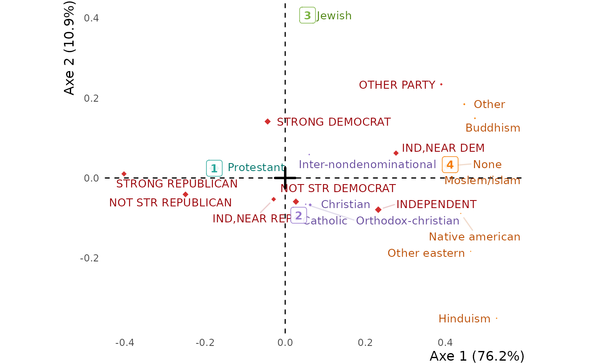

A readable, complete and beautiful graph of a correspondence analysis. Hovering a
level shows its profile — its distribution over the levels of the other variable, each
percentage coloured by its difference from the average profile, as in
tabxplor::tab(color = "diff") — so the graph is read with the table it draws. The
supplementary variables of the table (see correspondence_analysis) are drawn as
black italic text, and the clusters of one margin, made with hierarchical_clust,
can colour its levels. It is a ggplot2 graph, to which elements can be added with `+`;
pass it to ggi for the interactive version. ggfacto is the same
graph, for any analysis.
Usage
ggca(
res.ca,
axes = c(1, 2),
show_sup = TRUE,
xlim,
ylim,
out_lims_move = FALSE,
type = c("points", "text", "labels"),
text_repel = TRUE,
uppercase = "col",
tooltips = c("row", "col"),
rowtips_subtitle,
coltips_subtitle,
rowcolor_numbers,
colcolor_numbers,
cleannames = TRUE,
filter,
title,
text_size = 3.5,
dist_labels = c("auto", 0.12),
right_margin = 0,
size_scale_max = NULL,
use_theme = TRUE,
clust,
color_groups = "^.{0}",
clust_color_groups = "^.+$",
keep_levels,
discard_levels,
axes_names = NULL,
axes_reverse = NULL,
actives_in_bold = TRUE,
sup_in_italic = TRUE,
shift_colors = 0,
colornames_recode,
scale_color_light = material_colors_light(),
scale_color_dark = material_colors_dark(),
get_data = FALSE,
lang = NULL
)Arguments
- res.ca
An analysis made with
correspondence_analysisorFactoMineR::CA.- axes
The axes to print, as a numeric vector of length 2.
- show_sup
Set to
FALSEto leave the supplementary rows and columns out.- xlim, ylim
Horizontal and vertical axes limits, as double vectors of length 2.
- out_lims_move
When
TRUE, the levels outsidexlimorylimare moved to the edges of the graph rather than left out.- type
How the levels are printed:
"points"(coloured points with their names),"text"(coloured names) or"labels"(coloured labels).- text_repel
By default, labels are moved so that they do not overlap. Set to
FALSEto print each label exactly at its point.- uppercase
Print the levels of the column variables (
"col", the default), of the row variables ("row"), of both or none (NULL) in uppercase.- tooltips
The tooltips to build:
"row"for the profiles of the row levels,"col"for those of the column levels, both by default.- rowtips_subtitle, coltips_subtitle, rowcolor_numbers, colcolor_numbers, filter
Deprecated. A tooltip is headed by its variables' names;
color_groups = "^.{2}"replacesrowcolor_numbers = 2, anddiscard_levelsreplacesfilter.- cleannames
Set to
TRUEto clean levels names, by removing prefix numbers like"1-", and text in parentheses.- title
The title of the graph.
- text_size
Size of text.
- dist_labels
When
type = "points", the distance of the names from the points.- right_margin
A margin at the right, in cm.
- size_scale_max
The size of the largest point. By default, computed from the spread of the levels' weights.
- use_theme
By default, a specific
ggplot2theme is used. Set toFALSEto customize your owntheme.- clust
The clusters of the levels of one margin, as
hierarchical_clustreturns them outsidemutate(): `clust = hierarchical_clust(res.ca, ncp = 2, nb_clust = 4)`. The levels of a cluster take its colour, and the cluster is drawn at their barycentre.- color_groups
One colour per variable by default. A regex matched against each level name makes colour groups within the variables (
"^.{1}": upon their first character).- clust_color_groups
Color groups for the clusters.
- keep_levels, discard_levels
Regexes (or vectors of them) of the levels to keep, or to leave out.
- axes_names
Names of all the axes (not just the two selected ones), as a character vector.
- axes_reverse
`1` to invert left and right, `2` to invert up and down, `1:2` for both.
- actives_in_bold
Set the active levels in bold font.
- sup_in_italic
Set the supplementary levels in italics. They are drawn as black text.
- shift_colors
Change the colors of the variables.
- colornames_recode
A named character vector, in
forcats::fct_recode()style, to rename the colour groups (printed with `options(ggfacto.verbose = TRUE)`).- scale_color_light, scale_color_dark
The colours of the points and of the names.
- get_data
Returns the data frames the graph is drawn from, instead of the graph.
- lang
NULL(the session's language),"en"or"fr".
Value
A ggplot object, to which elements can be added with
+. Sending it through ggi draws the interactive graph.
Examples
# \donttest{
gss <- forcats::gss_cat |>
dplyr::filter(!relig %in% c("No answer", "Don't know", "Not applicable"),
!partyid %in% c("No answer", "Don't know"))
res.ca <- correspondence_analysis(tabxplor::tab(gss, relig, partyid))
ggca(res.ca) |>
ggi()
# the clusters of the religions, drawn among them
ggca(res.ca, clust = hierarchical_clust(res.ca, ncp = 2, nb_clust = 4))

# }